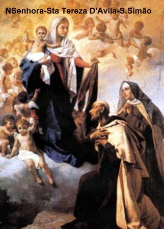
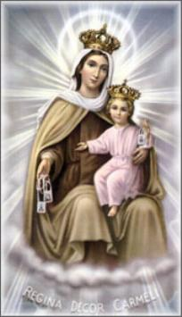
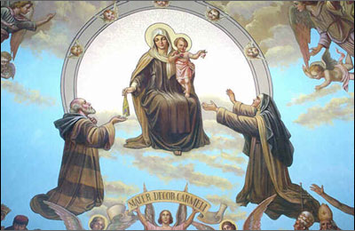
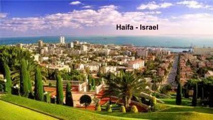
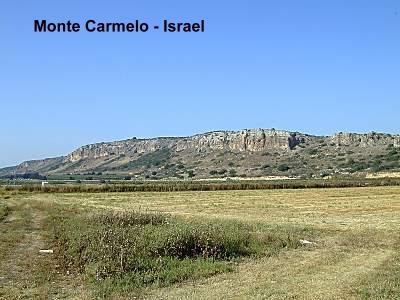
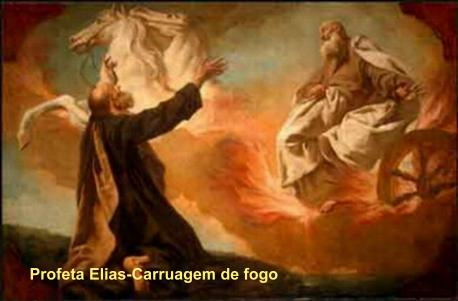
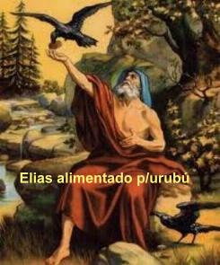
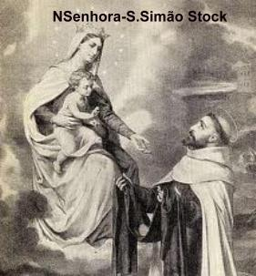
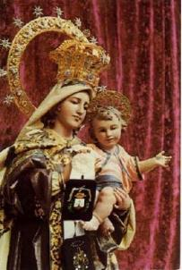

O ESCAPULÁRIO
DE NOSSA SENHORA
Simão Stock nasceu no condado de
Kent, na Inglaterra no ano 1165. Os registros indicam que, quando tinha 12 
Logo viajou a Roma, e de lá, para o Monte Carmelo na Terra Santa. No Monte Santo de Elias, no oeste da Galiléia (próximo a cidade de Haifa), Simão Stock passou vários anos de formação num Mosteiro Carmelita construído pelos eremitas. Era uma construção modesta e os monges viviam juntos, trabalhando, rezando, lendo e estudando os pergaminhos das Sagradas Escrituras.
Em 1245, com uma razoável instrução e profunda espiritualidade retornou a Inglaterra e se empenhou com interesse e fervor em todas as iniciativas da Comunidade, sendo por isso escolhido para Superior Geral. É historicamente correto que, em 1247, quando tinha 82 anos de idade, foi eleito como o sexto Superior Geral dos Carmelitas, logo no primeiro Capitulo realizado em Aylesford, Ducado de Kent. Continuou vivendo em Aylesford, na Inglaterra, quando ocorreu um desagradável episódio, oriundo de um grave desentendimento dentro da própria Comunidade Carmelita. Chegavam do Oriente muitos eremitas cheios de ideais, desejando entrar na nova instituição, e enfrentaram um terrível problema de rejeição. Stock ordenou que os Carmelitas estudassem, mas os mais velhos da Ordem não queriam que os contemplativos estudassem, argumentando que não havia necessidade, era perca de tempo. Isto criou uma grande discórdia interna, e o clero secular, que já não olhava os Carmelitas com bons olhos, revoltou-se e pediu ao Vaticano a supressão da Comunidade Carmelita. Este deprimente desfecho é o retrato das abomináveis consequências da antiga disputa existente, naquela época, entre as Ordens Religiosas, que se digladiavam em busca de um maior espaço junto à população civil. Diante de tão grave problema interno e de tamanha oposição das outras Ordens, Simão Stock, com seus 90 anos de idade, retirou-se para o Mosteiro de Cambridge, também no Ducado de Kent, preferindo permanecer distante e ter mais oportunidade para rezar e suplicar a proteção da VIRGEM MARIA.
Ao longo de sua vida, sempre revelou notável energia e muita disposição para o trabalho, alcançando uma infinidade de benefícios para o Carmelo, os quais foram desfrutados no presente, assim como num futuro distante. Mas, aquele problema incomodava e estava lhe causando sérias dificuldades administrativas e muitos aborrecimentos, em face da sistemática opressão por parte das outras instituições religiosas, que lhe negavam a necessária paciência e tolerância, assim como o apoio junto às autoridades eclesiásticas.
Sem desanimar e sempre em busca de soluções para as dificuldades, no ano de 1251, suplicou fervorosamente a especial intercessão da VIRGEM MARIA, a fim de lhe conceder conselho e orientação de como proceder diante daquela insuperável dificuldade. Simão ouviu a resposta de NOSSA SENHORA, que lhe ordenava: “Sem medo, exponha o problema ao Papa Inocêncio, pois receberá dele um remédio eficaz para essa dificuldade”.
Simão e os Carmelitas seguiram o conselho da VIRGEM, e o êxito foi notável. Por ordem do Papa Inocêncio IV, eles receberam uma carta de proteção contra qualquer assédio ou interferência inconveniente. (Carta Pontifícia de 13 de janeiro de 1252, Perugia, Itália). E os bons resultados começaram a aparecer havendo uma pronta normalização dos dissídios internos, que desapareceram de uma vez. Mas, relativamente às outras Ordens, embora não existindo mais aquelas disputas abertas e afrontosas, a Ordem Carmelita continuou não sendo “integralmente” aceita pelos demais religiosos e eclesiásticos ingleses. Eles consideravam que os Carmelitas eram mais uma Comunidade no meio de tantas outras, e para piorar, com um modo de vida que não condizia com os costumes locais, ou seja, cultivando uma vida monástica dentro de uma cidade inglesa. Preocupado com as hostilidades sofridas e com a resistência das outras Ordens, Simão, intensificou as suas fervorosas súplicas a MÃE DEUS, pedindo uma luz que lhe indicasse o caminho correto para a paz nos corações e alcançar uma convivência pacífica com todos.
Na noite de Domingo dia 16 de Julho de 1251, com os olhos e o coração no SENHOR e na VIRGEM DO CARMELO, piedosamente rezava conversando com a MÃE DE DEUS:
“Flor do Carmelo, videira florida, esplendor do Céu. VIRGEM MÃE incomparável. Doce MÃE, sempre VIRGEM, sede propicia aos carmelitas, ó Estrela do Mar”.
Orava em sua cela, quando de repente viu um imenso clarão luminoso e no interior dele estava NOSSA SENHORA com o MENINO JESUS apoiado no braço esquerdo, rodeada de Anjos, e trazendo na mão direita um Escapulário, que lhe entregou dizendo:
“Recebe, meu filho, este é o Escapulário da tua Ordem, como sinal da Confraria e selo do privilégio que obtive para ti e para todos os Carmelitas. Aquele que morrer com ele, não padecerá o fogo eterno. É sinal de salvação, uma salvaguarda nos perigos e penhor de paz e aliança eterna”.
Após esta Aparição, as notícias se espalharam ligeiras e Simão Stock, assim como a Ordem do Carmo passaram a ser respeitados e olhados de uma maneira muito mais amigável. A notícia do Escapulário verdadeiramente causou sensação, pois todas as pessoas desejavam possuí-lo, em razão dos privilégios especiais que a MÃE DE DEUS conseguiu do SENHOR, para aqueles que o usassem. A Comunidade Carmelita se expandiu, fundaram casas em Cambridge em 1248, em Oxford no ano de 1253, em Paris e Bolonha no ano de 1260. A perseguição contra a Ordem desapareceu, ninguém mais se atrevia a molestar a tranquilidade da Ordem favorecida pela VIRGEM MARIA. Então, os Carmelitas assumiram Paróquias e pregaram o Evangelho por toda a parte. A fama da Ordem aumentou em toda a Europa, possibilitando o notável crescimento do número de vocações, da mesma forma que o Carisma Carmelita, tão bem cuidado pelos seus membros, servia de modelo para os outros e despertava no povo em geral, um maior zelo e interesse no exercício da espiritualidade. Quanto a Simão Stock, a sua especial veneração e o imenso amor que devotava à MÃE DE DEUS delineavam a beleza de seu caráter e refletia de modo direto e louvável, no seu comportamento pessoal. Ele carinhosamente era estimado por todos. Nos momentos de lazer apreciava a música, deixava o seu espírito solfejar as notas que prazerosamente entoava poemas e canções sentimentais e amorosas, em homenagem e honra a VIRGEM MARIA.
Simão Stock viveu uma vida santa e faleceu com 100 anos de idade! Morreu no Mosteiro Carmelita em Bordeaux, na França, no dia 16 de maio de 1265.
A FESTA DA PADROEIRA DOS CARMELITAS
A festa da Padroeira da Ordem Carmelita foi comemorada inicialmente na data da celebração da Assunção da Bem-Aventurada VIRGEM MARIA aos Céus, dia 15 de Agosto. Entretanto, entre 1376 e 1386, passou a ser comemorada no dia 30 de Janeiro de 1226, para celebrar a vitória da Ordem do Carmo sobre os seus inimigos, que não queriam que a Regra (a Constituição da Comunidade Carmelita) recebesse a aprovação oficial do Vaticano. Todavia, com o auxilio da VIRGEM MÃE, o documento pode ser apreciado e avaliado pelo Papa Honório III, que o aprovou na mencionada data.
Entretanto, na continuidade dos anos, para a festa comemorativa de NOSSA SENHORA DO CARMO e da Ordem Carmelita, foi escolhido o dia 16 de julho por que foi nessa data, em 1251, que NOSSA SENHORA deu o Escapulário a São Simão Stock. Esta Aparição foi oficialmente aprovada pelo Papa Sixto V em 1587.
O ESCAPULÁRIO DE NOSSA SENHORA
O Escapulário de NOSSA SENHORA é também conhecido como o Escapulário do Carmo, isto por que existem outros Escapulários em outras Famílias Religiosas, mas ele é o mais conhecido, e também o mais famoso e mais difundido de todos que existem. É denominado simplesmente de "Escapulário", e a festa de sua instituição é comemorada na mesma data da festa de NOSSA SENHORA DO CARMO, anualmente no dia 16 de julho. Provavelmente, é o Escapulário mais antigo e serviu como modelo para todos os outros.
POR QUE ESCAPULÁRIO?
A palavra Escapulário é derivada de “escapula”, palavra latina que significa armadura, proteção. E verdadeiramente a função do Escapulário é proteger o fiel que o recebe e usa regularmente no cotidiano, constituindo-se numa preciosa proteção para a vida e após a morte.
Isto por que, o uso do Escapulário é um sinal de confiança na permanente e eficaz proteção da VIRGEM MARIA, que derrama as graças necessárias a fim de preservar os portadores dos perigos do corpo e da alma. É um Sacramental, isto é, segundo o Concílio Vaticano II, "é um sinal sagrado, no molde dos sacramentos, por meio do qual se realizam os seus efeitos em benefício do espírito, por intercessão da Santa Madre Igreja".
É também uma realidade visível, que nos concede a graça de DEUS. Santa Tereza D’Ávila (reformadora da Ordem das Freiras Carmelitas juntamente com São João da Cruz) dizia que usar o Escapulário é o mesmo que estar revestido com o hábito de NOSSA SENHORA.
Setenta anos mais tarde, a VIRGEM MARIA apareceu ao Papa João XXII, e confirmou a promessa feita a São Simão Stock e acrescentou outra, denominada de privilégio sabatino, em que, mediante determinadas condições, a alma do Carmelita (daquele que usa o Escapulário) será livre do Purgatório se lá estiver, logo no sábado seguinte à sua morte.
Os Soberanos Pontífices consideram como “Carmelitas”, e, portanto pertencentes à Ordem do Carmo, todas as pessoas que recebem o Escapulário. Para não interromper as graças do Escapulário, o Papa Pio X, em 16 de Dezembro de 1910, determinou que uma vez imposto, ele poderá ser substituído por uma medalha que tenha de um lado NOSSA SENHORA sob qualquer invocação (do Carmo, das Dores, da Conceição, de Fátima etc.) e do outro lado, o SAGRADO CORAÇÃO DE JESUS, sendo benta com a intenção de substituir o Escapulário.
Em 28 de Janeiro de 1964, o Papa Paulo VI, com a finalidade de facilitar a divulgação, concedeu que todos os Sacerdotes pudessem impor o Escapulário e substituí-lo pela respectiva medalha, se fosse o caso, pois até então este privilégio era somente dos Padres Carmelitas e de Sacerdotes que conseguiram este direito diretamente da Santa Sé.
AS DUAS GRANDES GRAÇAS
1 – Primeira Graça - Estar livre do fogo do Inferno.
Receber o Escapulário e usá-lo normalmente, ou substituí-lo por uma medalha, conforme a concessão oficial é o requisito mais importante. Isto por que, morrendo com ele ou com a medalha, alcançará a graça Divina, que lhe concederá deixar este mundo em perfeita santidade.
2 - Segunda Graça - O privilégio do sábado.
Ser libertado do Purgatório no primeiro sábado, depois da morte, se lá estiver
CONDIÇÕES PARA ALCANÇAR AS GRAÇAS
a) Usar diariamente o Escapulário.
b) Guardar a castidade própria a cada estado civil.
c) Rezar todos os dias o Ofício de NOSSA SENHORA. Não sabendo ler, se abster de comer carne as quartas-feiras e sábados. Esta obrigação pode ser comutada, por um sacerdote credenciado mudando para o seguinte: rezar 7 Pais Nosso + 7 Aves Maria + 7 Glorias, ou pela reza do Terço de NOSSA SENHORA.
d) Os que rezam o Terço todos os dias não necessitam de rezar outras orações, mas deverão também obedecer aos itens “a” e “b” mencionados acima.
e) O Sacerdote que reza diariamente o Ofício Divino, não necessita de outras orações, mas também deve cumprir aos itens “a” e “b” acima.
f) Os homens, as mulheres e as crianças que rezam menos ou pouco, por qualquer razão, aquelas orações prescritas acima poderão ser comutadas por três Aves Maria rezadas diariamente, acompanhadas dos itens “a” e “b” já mencionados.
REJEIÇÃO AO ESCAPULÁRIO
No mundo sempre existiram as duas forças, o “bem” e o “mal”, que atuam decisivamente em todas as fases da existência humana. O Escapulário é uma preciosa bênção Divina derramada sobre a cristandade, pelas mãos carinhosas de Nossa MÃE SANTÍSSIMA, mas, também ele, encontrou os terríveis opositores, os descrentes e os palpiteiros, que não acolheram e combateram a sua verdade. Por incrível que possa parecer, o maior inimigo do Escapulário foi um sacerdote, o Padre francês Jean de Launoy, professor da Sorbonne em Paris, que vaidosamente se constituindo no senhor da verdade, desmentiu as notícias sobre o “bentinho”, dizendo que era apenas uma lenda. Ele já era um conhecido crítico literário, cuja teologia tinha uma forte tendência jansenista, e, portanto, com nítido parentesco com aquelas doutrinas que deram origem a Reforma Protestante. O livro escrito pelo Padre Launoy, expõe as suas idéias e teorias abomináveis, que logo conduziu a Igreja colocá-lo no Índice dos Livros Proibidos. O papa Bento XIV, um dos mais sábios teólogos de todos os tempos, não se limitou apenas a condenar o Padre Launoy, mas disse claramente que só um desprezador da Religião podia negar a autenticidade da Visão do Escapulário. Apesar disto, o livro de Launoy continuou a ser citado por outros, como ele, que por certo estavam distantes da graça de DEUS. E por este motivo, em 1398, Frei João Grossi, Superior Geral dos Carmelitas, escreveu uma obra-prima denominada “Viridarium”. Padre Grossi era um homem santo e muito letrado, tornou-se conhecido por que se destacou de modo brilhante com sua atuação correta e incisiva, ajudando a terminar com o Grande Cisma do Ocidente. No livro, ele faz um estudo apurado sobre todos os acontecimentos, conseguindo depoimentos notáveis e esclarecedores, de diversos companheiros que conviveram com Simão Stock. Assim, ele pode reconstruir os fatos de modo autêntico, publicando a verdade límpida e concreta, sobre as Aparições da MÃE DE DEUS, e a instituição do Escapulário. Na parte final do livro apresenta um catálogo contendo todos os Santos Carmelitas, informando pela ordem, que São Simão Stock é o nono Santo e o Sexto Superior geral da Ordem. Também descreveu com minúcias, a Aparição de NOSSA SENHORA, no dia 16 de julho de 1251, e concluiu o livro confirmando que Simão Stock morreu em Bordeaux, na França, quando visitava o Mosteiro Carmelita na Província de Vascônia no ano 1261.
Padre Peter contemporâneo de Simão Stock, que vivia na Palestina, com 83 anos de idade escreveu um livro intitulado: "De multiplicatione Religionis Carmelitarum per Provinciais Syriae et Europae; et de perditione Monasteriorum Terrae Sanctae". Nesta obra, ele descreve as terríveis perseguições e dissensões que atuaram de maneira devastadora querendo arruinar a Ordem do Carmo, antes da Aparição de NOSSA SENHORA. Com segurança, afirma que toda aquela resistência contra a Ordem era fomentada por satanás. Quando a SANTÍSSIMA VIRGEM MARIA apareceu ao Prior Geral, o Papa não só aprovou a instituição e Regra da Ordem, mas ordenou que cessassem com todo o tipo de censuras eclesiásticas desagregadoras contra os Carmelitas. O Papa também enviou cartas a todos os Arcebispos e Bispos, exortando-os a tratar com mais caridade e consideração os seus amados irmãos Carmelitas, permitindo e auxiliando na construção de Mosteiros adequados a necessidade da Ordem.
Quinze anos depois da morte de São Simão Stock, ocorrida em 1261,o Papa Gregório X faleceu e foi sepultado em Arezzo, na Itália, no dia 10 de Janeiro de 1276, tendo governado a Igreja desde 1271. Os seus contemporâneos testemunharam que desde sacerdote, ele usava o Escapulário. Em 1830 quando foi exumado o seu corpo para ser colocado num relicário de prata, encontraram intacto o Escapulário de NOSSA SENHORA DO CARMO, feito de seda carmesim, com precioso bordado a ouro. Encontra-se, hoje, no museu de Arezzo, como um de seus tesouros. Este é o primeiro Escapulário pequeno conhecido na História.
ALGUNS SANTOS DA ORDEM
Ao longo da história da Igreja, muitos homens e mulheres Carmelitas se tornaram Santos. Apenas com o objetivo de mencionar aqueles que estão em maior evidência aqui no Ocidente, citamos: Santa Teresinha do MENINO JESUS, Santa Tereza D’Ávila, São João da Cruz, Santa Edith Stein, Beato Tito Brandsma e Beato Hilário, mártires nos campos nazistas, São Simão Stock, Beato lzidoro Bakanja, mártir africano, Santa Madalena de Pazzi.
POR QUE SE CONSAGRAR A NOSSA SENHORA?
O principal valor do Escapulário é a Consagração a MARIA. Consagrar é se oferecer a VIRGEM SANTÍSSIMA, para que Ela nos ajude a realizar plenamente o projeto de DEUS em nossa vida. É escolhê-la como nossa Padroeira e nos colocar sob os seus cuidados e proteção. Consagrar é escolher MARIA como nossa MÃE, que nos inspira e nos auxilia na solução das dificuldades do cotidiano, zelando e guardando a nossa integridade e revigorando a nossa fé e confiança no SENHOR. É escolher MARIA como nossa Mestra, que nos ensina o caminho para chegarmos a JESUS, estimulando-nos a viver na humildade e na total entrega a DEUS. É escolher MARIA como nossa Rainha, que reinando em nosso coração nos protege contra as insídias de satanás e intercede por nós a DEUS. Ser Consagrado a MARIA é declarar como Ela fez: "Sou serva de DEUS", disposto a fazer em tudo e sempre, a Vontade do PAI.
ORAÇÃO
SENHORA DO CARMO, protegei-nos de todos os perigos e dai-nos a graça de termos uma boa morte. Que sob o Vosso olhar e Vossa proteção possamos obter a misericórdia de DEUS todos os dias de nossa vida. Querida MÃE, não nos deixeis abandonados ao nosso egoísmo, cultivando a indiferença, o ódio e o rancor. Protegei as crianças, os jovens, os pais e as mães de família, assim como os idosos. Fazei crescer em nosso coração um profundo amor, especialmente por aqueles que mais precisam de nossa atenção e carinho. Amém.
ORAÇÃO A NOSSA SENHORA PELOS QUE USAM O ESCAPULÁRIO
Ó VIRGEM DO CARMO e MÃE amorosa de todos os fiéis, mais especialmente dos que vestem Vosso Sagrado Escapulário. Ó VIRGEM SANTÍSSIMA, disseste que o Escapulário é defesa nos perigos, sinal de Vosso Amor e laço de Aliança entre Vós e vossos filhos. Fazei, pois, MÃE amorosa, que ele me una perpetuamente a Vós e me livre de todo o pecado. Em prova do meu reconhecimento e fidelidade, ofereço-me todo a Vós, consagrando-Vos neste dia os meus olhos, meus ouvidos, minha boca e todo o meu ser. E porque Vos pertenço inteiramente, guardai-me e defendei-me como coisa e propriedade Vossa. Amém.







